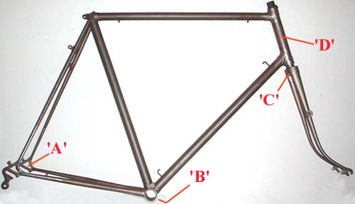

| As
with most other classic marques, the frames were identified with
a sequence of numbers or a combination of letters and numbers,
stamped on the frame when built. It is possible to identify the
approximate age of any frame by this 'Frame Number'.
NUMBER LOCATION
'Scot'
frame numbers may be found in the following positions, according
to age ;

Prior
to 1951, the frame number was stamped on the outside of the left-hand
rear frame end (dropout) shown as 'A' above. From 1951
onwards, the position of this frame number was moved to the underside
of the bottom bracket shell, shown as 'B'. Irrespective
of the location of 'A' or 'B', the frame number should be repeated
on the fork crown shown as 'C'.
Position 'D' relates to the fork steerer tube (normally
hidden within the head tube) which has at various times also had
the frame and other numbers on it. Where the frame number has
been found it will generally be stamped on, written in permanent
ink or hand-painted in white or gold.
From around 1947 to 1953 position 'D' was also used on some but
not all frames, to mark the serial number taken from the customers
specification sheet. This number will be different than that found
at 'A' or 'B' and 'C'.
Where the shape or design prevented the fork crown being stamped
on the rear, the number was may be stamped on the underside of
the crown, or at position 'D'
NUMBER STRUCTURE
How the frame
number is structured depends on the age of the frame as follows
;
| pre-1936 |
It
would appear that a different method of frame numbering
existed. One 1936 Scot frame - No.2516 clearly does
not fit the later pattern as shown below, however this is
further confused by another 1936 frame - No.12936
that does !. More information is required on those surviving
Scot's from before 1936 to establish what system of numbering
was used, but it is likely that it is purely the next number
of frame built since building began with frame number '1'. |
| Frame
No's -(built from 1936 to 1948) |
A
serial number composed entirely of numbers (for example
25047)
The
first part, identifies the sequential number of the frame
as it was built in that year. The first frame built was
given the number 1, the second frame number 2, the third
3 and so on until the end of the year.
The
last two digits of the number, and the second part, represent
the calendar year in which the frame was made i.e. 46
for 1946, 47 for 1947 and so on.
The example '25047' would therefore have been the
250th frame built in 1947.
No
frames appear to have been built in the years 1940 to
1945 as a result of wartime restrictions on materials
and other essential war work. |
| Frame
No's - (built from 1949 to 1981) |
Alphanumeric
serial numbers were introduced in 1949 (for example 250Q),
initially using a single letter code rather than a number
for the calendar year. For the first two years (1949/1950)
the letters 'Q' & 'R' were used, followed by the letter
'A' in 1951.
As before, the first part identifies the sequential number
of the frame as it was built that year. The first frame
built was given the number 1, the second frame number
2, the third 3 and so on until the end of the year.
The
second part of the number was changed and instead of two
digits representing the calendar year in which the frame
was made, a letter code was introduced.
The
example '250Q' would therefore be the 250th
frame built in 1949 (the letter Q, being the year
code for 1949). See the the list below for interpreting
the letter codes. |
| Frame
No's - (built from 1981 to 1983 |
Although
perhaps only 200 frames at best were built during the
last three years of the company. All of the frames that
were produced under the new owner Evan Ritchie, were given
a sequential number, prefixed by the letters 'ER'.
Commencing with ER1, (The first frame being ER1,
the second ER2, the third ER3 and so on....) the highest
I have seen to date is ER11, the 11th frame, and sold
to Jack Potter on 24 March 1982.
After Evan departed in October 1982, the final frames constructed were given numbers appropriate to the then owner Sandy Birnie, prefixing the frame number as above but substituting 'ER' for 'SB' and the second and possibly only other frame built before closure with the prefix 'LB'.
|
| Frame
No's - (built 1983 on...... |
Whilst
these are not strictly "Flying Scot's" in that
they were not produced by David Rattray & Co. Ltd.
When the "Flying Scot" name was bought and the
owner Jim Houston began production of new frames using
Dave Yates at M.Steel Cycles, they were each given unique
numbers. These were however numbered alongside their own
machines, making it difficult to directly correlate numbers
to a particular Scot's age without reference to the original
frame record They should however have a number greater
than 613 with the prefix "FS". however there
are instances were the prefix has been omitted The numbers
are stamped on the bracket shell and steerer tube. |
LETTER
CODES (1949-1981)
| YEAR |
LETTER
CODE |
Position
of serial no. on left-hand dropout 'A' |
| 1949
= |
Q |
| 1950
= |
R |
| 1951
= |
A |
| 1952
= |
B |
| 1953
= |
C |
| 1954
= |
D |
| 1955
= |
E |
| 1956
= |
F |
| 1957
= |
G |
| 1958
= |
H |
| 1959
= |
I |
| 1960
= |
J |
Position
of serial no. on bottom bracket shell 'B' |
| 1961
= |
K |
| 1962
= |
" |
| 1963
= |
L |
| 1964
= |
" |
| 1965
= |
M |
| 1966
= |
" |
| 1967
= |
N |
| 1968
= |
" |
| 1969
= |
O |
| 1970
= |
" |
| 1971
= |
P |
| 1972
= |
" |
| 1973
= |
Q |
Position
of serial no. on rear of the fork crown 'C' |
| 1974
= |
" |
| 1975
= |
R |
| 1976
= |
" |
| 1977
= |
S |
| 1978
= |
" |
| 1979
= |
T |
| 1980
= |
" |
| 1981
= |
U |
|
|
GENERAL
NOTES
Year
letters Q & R were used initially in 1949 & 1950, and
were used again from 1973 to 1976. It is not difficult however
to tell the earlier frames from those made in the 1970's as the
number on an earlier frame should be found on the dropout, whereas
by the 1970's it had moved to the bottom bracket shell.
The
letter code sequence was restarted with the letter 'A' in 1951,
however the actual the reason for restarting is not known.
From
1961, the annual letter code change, appears to have become a
biannual occurrence. From this time one letter appears to have
represented frames made in two calendar years. This appears to
start with the letter 'K'
For further notes on why discrepancies in frame numbering occur
click here
FORK STEERER TUBE NUMBERING
|
|
If
the frame is dismantled, it may be possible to find an additional
number stamped on the fork steerer tube.
From
the mid 1950's on, this may well be a repeat of the frame
number either hand written, painted, or stamped on.
Prior to that, and from about 1947, it is also possible
to find what appears to be a totally unrelated number stamped
here. This is the serial number from the top right-hand
side of the customer order / specification sheet (as shown
below), a short lived method of additionally identifying
the frame.
Note
that the absence of any number here doesn't imply anything
in respect of the frames originality.
|
| Position
of number on fork steerer tube 'D' |
|
OTHER NUMBERS
Bottom bracket shells are often stamped or
have cast in during manufacture, part or code numbers totally
unrelated to the frame number.
Those supplied by Nervex (Francolam) as shown here are stamped
with the original details (angles and chainstay diameter) of the
shell as manufactured.
In
order to improve the accuracy of the information in these pages,
the only thing that I would ask in return for using these pages,
is that you provide me with the details of your own machine, along
with the serial number, any other information you can provide
and where possible a photograph.
|